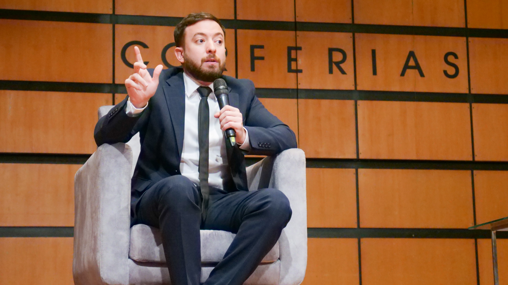

Biografía
Agustín Laje Arrigoni nació el 16 de enero de 1989 en Córdoba, Argentina. :contentReference[oaicite:4]{index=4} Estudió Ciencia Política en la Universidad Católica de Córdoba y realizó estudios de especialización en contraterrorismo en el Center for Hemispheric Defense Studies de la National Defense University en Washington D.C. :contentReference[oaicite:8]{index=8}
Obra destacada
Entre sus libros más conocidos se encuentran:
- El libro negro de la nueva izquierda (2016) — coautor con Nicolás Márquez. :contentReference[oaicite:11]{index=11}
- La batalla cultural: Reflexiones críticas para una Nueva Derecha (2022). :contentReference[oaicite:13]{index=13}
- Generación idiota: Una crítica al adolescentrismo (2023). :contentReference[oaicite:15]{index=15}
- Globalismo: Ingeniería social y control total en el siglo XXI (2024). :contentReference[oaicite:17]{index=17}
Temas centrales
Sus trabajos suelen centrarse en:
- Críticas a lo que denomina “nueva izquierda” y «ideología de género». :contentReference[oaicite:18]{index=18}
- La defensa de valores tradicionales, la libertad y la propiedad privada. :contentReference[oaicite:19]{index=19}
- La idea de una «batalla cultural» en el contexto latinoamericano. :contentReference[oaicite:20]{index=20}
Ver más sobre sus libros
_(cropped).jpg)